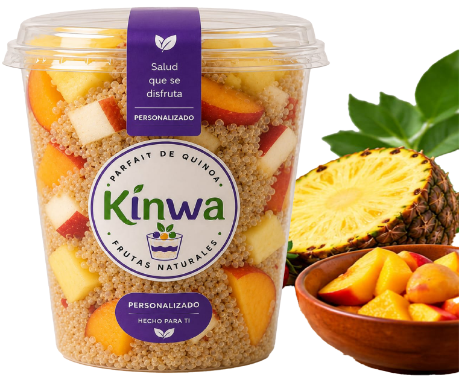

KINWA es un parfait de quinoa con piña, melocotón , manzana y fresa elaborado con ingredientes naturales para ofrecerte una experiencia deliciosa, fresca y nutritiva

50 OZ
Ideal para compartir
20 OZ
Porción perfecta para tu día
16 OZ
Elige tus frutas favoritas

Saludable

Natural

Aporta Energia

Listo para consumir

Originaria de los Andes de Perú y Bolivia, la quinoa se cultiva desde hace más de 5.000 años . Es un superalimento rico en proteínas, fibra y nutrientes esenciales. Incorporarla a tu alimentación es una forma natural y deliciosa de cuidar tu salud.
Soy Esteban Meneses, consumidor de KINWA Es un producto delicioso, con el equilibrio perfecto entre dulce y acidez tiene la virtud de ser muy rico y, a la vez, saludable puedo consumirlo sin sentir culpa, gracias a sus ingredientes naturales
Esteban M.
Es un producto muy natural, que permite ser preparado con fruta y que no tiene ningún tipo de conservantes. Me ha llamado mucho la atención es el tiempo que pasa la quinoa con la misma fruta, porque esto permite que los sabores sean más naturales y que la fruta pueda aportar de manera natural todo su sabor al no tener ningún conservante,es un producto que yo recomendaría.
Felipe P.
KINWA es un producto muy bueno, en la mañana me gusta desayunar con ella y tambien la como a cualquier hora del día es muy refrescante y nutritiva
Johana C.